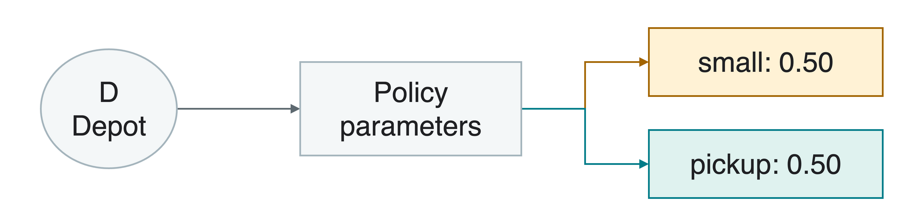
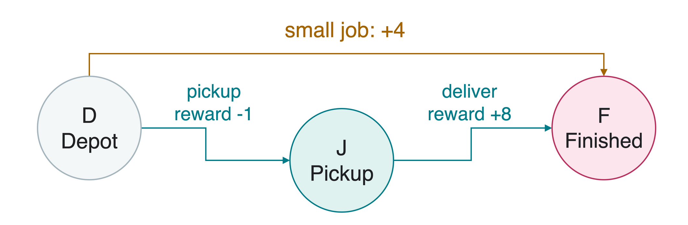
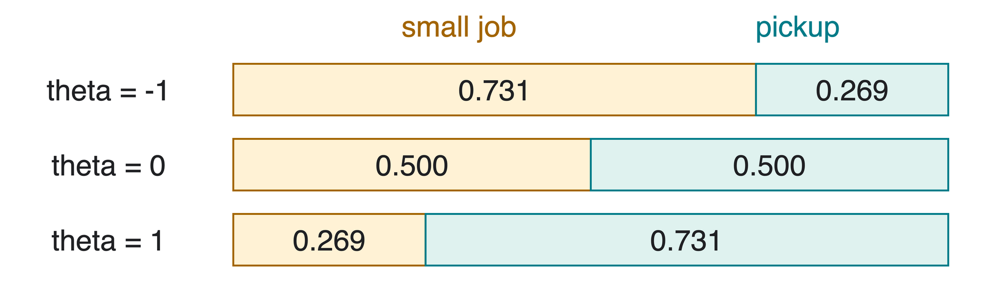
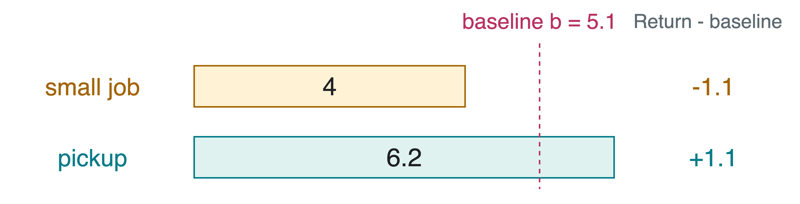
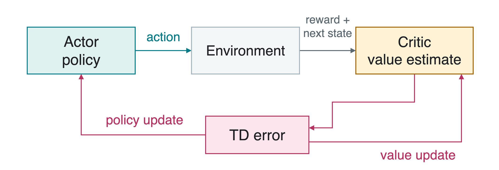

In policy-based reinforcement learning (RL), learn a policy \pi_\theta(a\mid s) directly. It gives the probability of choosing action a in state s, using parameters \theta.

A stochastic policy samples an action from these probabilities. Model-free learning uses experience without an explicit transition-and-reward model.
Value-based methods learn action values and derive choices from them. Policy-based methods adjust the action rule itself.
A Delivery Choice
At depot D, choose a small job or pickup. For this example, always deliver after reaching pickup stop J. Learn only the initial choice at D.

An episode is one run ending at terminal state F. The discount factor\gamma=0.9 gives later rewards less weight.
The return, total discounted future reward, is 4 for the small job and -1+0.9\cdot8=6.2 for pickup then delivery.
A Parameterized Policy
A parameterized policy converts adjustable numbers into action probabilities. Use one real-valued logit\theta, a preference score before conversion:
The sigmoid function \sigma maps any real \theta to a probability between 0 and 1.

Start at \theta=0, so both actions have probability 0.5.
Expected Return
The objectiveJ(\theta) is the expected return from the starting state. The expectation \mathbb E_{\pi_\theta} averages over episodes generated by the current policy:
J(\theta)=\mathbb E_{\pi_\theta}[G_0].
In our example, with pickup probability p:
J(\theta)=4(1-p)+6.2p=4+2.2p.
At p=0.5, expected return is 5.1, although an individual episode returns either 4 or 6.2.
The learning goal is to improve average return over sampled episodes. A single good outcome does not identify the best policy.
Policy-Gradient Ascent
A gradient\nabla_\theta J describes how changing parameters changes expected return. Gradient ascent takes a small step in the increasing direction:
Here \log is the natural logarithm. REINFORCE estimates the objective’s gradient using:
\hat g=\sum_{t=0}^{T-1}\gamma^tG_t\,
\nabla_\theta\log\pi_\theta(a_t\mid s_t),\qquad
\mathbb E[\hat g]=\nabla_\theta J.
The log-probability gradient points toward making the sampled action more likely. Its return weights that direction.
Only policy probabilities need derivatives. The simulator supplies sampled states and rewards. The factor \gamma^t preserves the discounted starting-state objective.
Two Possible Sampled Updates
Restart at \theta=0, p=0.5. At D, the log-probability derivatives are 1-p for pickup and -p for the small job. Also \gamma^0=1.
Sampled action
Return G_0
Log-probability derivative
Sample gradient g_0
Pickup
6.2
0.5
3.1
Small job
4
-0.5
-2
With \alpha=0.1, a pickup episode gives \theta=0.31; a small-job episode gives \theta=-0.20. Each raises its own sampled action’s probability.
The average sample gradient is 0.5(3.1)+0.5(-2)=0.55, matching the exact gradient. Individual updates can point in different directions.
A Baseline Reduces Update Noise
A baselineb(s) is a state-dependent reference subtracted from the return. Choose it before the current action, and hold it fixed while computing the actor gradient.
Use the illustrative baseline b(D)=5.1, the current policy’s expected return:

Replace G_t by G_t-b(s_t) in the policy-gradient estimate. An action-independent baseline leaves the expected gradient unchanged.
A well-chosen baseline reduces variance, the variation across sampled updates. The exact value 5.1 is for our illustration; a learner usually estimates it.
Advantage and Its Estimate
V^\pi(s) is expected return following policy \pi. Q^\pi(s,a) is expected return after choosing a once, then following \pi.
The advantage is the action’s expected improvement over that state baseline:
A^\pi(s,a)=Q^\pi(s,a)-V^\pi(s).
At p=0.5, V^\pi(D)=5.1:
Action
Q^\pi(D,a)
True advantage
Small job
4
-1.1
Pickup
6.2
1.1
Using a learned estimate V(D)=5, the pickup episode instead gives the sampled estimate\hat A_0=G_0-V(D)=1.2.
REINFORCE with a Baseline
Collect each episode with fixed \theta. Use b(s)=0 or a previously learned state-value estimate.
for each episode
trajectory=SampleEpisode(piTheta)
G=DiscountedReturns(trajectory, gamma)
g=0
for each step tintrajectory
weight=gammat* (G_t-b(s_t))
g+=weight*ScoreGradient(theta, s_t, a_t)
theta+=alpha*g
ScoreGradient means \nabla_\theta\log\pi_\theta(a_t\mid s_t). DiscountedReturns computes G_t=r_{t+1}+\gamma G_{t+1} backward, starting from G_T=0.
Use the same collection parameters for all gradients in this update, then collect fresh experience after changing the policy.
Actor-Critic Roles
The actor learns action probabilities \pi_\theta(a\mid s), with parameters \theta.
The critic learns a state-value estimate V_w(s), with parameters w.

Temporal-difference (TD) learning forms a target from a reward and an estimated next-state value. The TD error compares that target with the current prediction, allowing updates after each transition.
A TD Advantage Estimate
Bootstrapping uses a current value prediction inside another learning target. For transition (s_t,a_t,r_{t+1},s_{t+1}):
Stop-gradient treats a value as a constant during differentiation. In PyTorch, use .detach() for this purpose.
The actor gradient flows through the selected action’s log-probability. The critic gradient flows through its current-state prediction. Compute the shared TD error before either update.
One Actor-Critic Step
At each episode start, set s to the initial state and weight = 1. Repeat until the task terminates.
(a, logProb) =SampleAction(piTheta(s))
(r, sNext, terminal) =Step(a)
target=rifterminalelser+gamma*Vw(sNext)
delta=target-Vw(s)
actorLoss=-weight*logProb*StopGrad(delta)
criticLoss= (Vw(s) -StopGrad(target))2/2
UpdateBoth(actorLoss, criticLoss)
weight*=gamma
s=sNext
SampleAction also saves the sampled action’s log-probability. Step performs the action. UpdateBoth minimizes each network’s loss. Here weight equals \gamma^t.
Actor outputs:logits, unnormalized action scores, become probabilities for sampling.
Action mask: unavailable actions get probability zero. Renormalize over legal actions and save the chosen action’s log-probability from that same distribution.
Learning: detach the advantage and bootstrap target in the appropriate losses. Terminal targets use only the final reward.
Evaluation: freeze learning while measuring performance against the reference agent.
Which network should receive a gradient from the selected action’s log-probability?
The actor. The critic learns from its own value-prediction loss.
Takeaways
A parameterized policy directly represents action probabilities.
Policy gradients improve expected return using sampled experience.
REINFORCE uses complete episodes and return-to-go.
A state baseline can reduce update noise without changing the expected gradient.
True advantage is an expected-value difference. Sampled or TD-based advantages are estimates.
Actor-critic learns both a policy and a value predictor, using separate gradient paths.
Keep the sampled reward, return, baseline, and advantage estimate distinct when explaining an update.